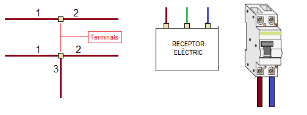
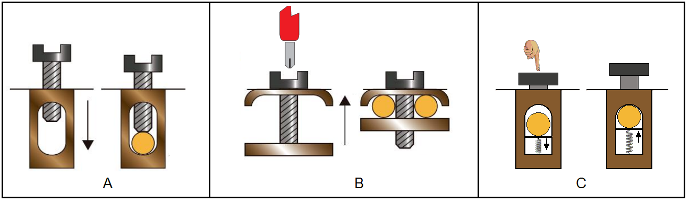
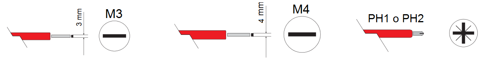

El muntatge de qualsevol instal·lació elèctrica requereix realitzar:
- unions entre conductors
- connexions dels conductors als receptor elèctrics i mecanismes (polsadors, interruptors, ...)

Les connexions elèctriques es realitzen mitjançant els terminals de connexió. A continuació podem veure alguns dels tipus de terminals de connexió més utilitzats:

Si per a fixar el conductor al terminal necessitem utilitzar un tornavís, aquest ha de ser adequat al caragol del terminal.
